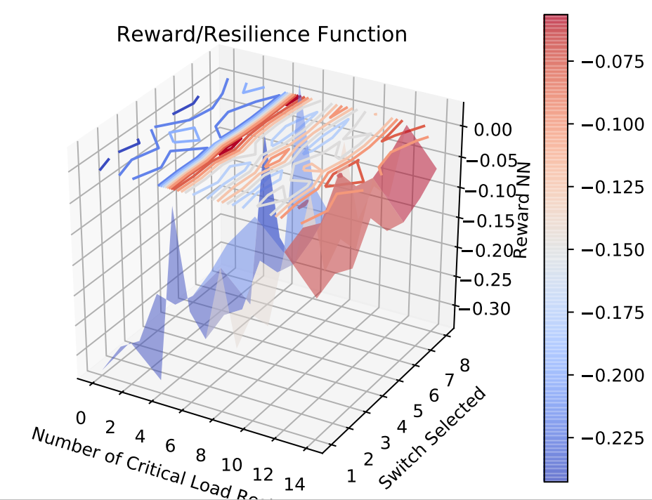

Reward Network Visualization for Critical Load Restoration¶
{kind=link}
Classes and Functions¶
- visualize_reward_net_physical.Plot3D(X, Y, V)¶
This function is used for surface plots X, Y and V indicates value for the 3 different axis
- visualize_reward_net_physical.get_reward(path)¶
Function to obtain the reward value from the learned reward network
- visualize_reward_net_physical.plot_reward_network(model)¶
Function to plot the reward network for the MDP in the cyber environment
- visualize_reward_net_physical.tensor(data, *, dtype=None, device=None, requires_grad=False, pin_memory=False) Tensor¶
Constructs a tensor with
data.Warning
torch.tensor()always copiesdata. If you have a Tensordataand want to avoid a copy, usetorch.Tensor.requires_grad_()ortorch.Tensor.detach(). If you have a NumPyndarrayand want to avoid a copy, usetorch.as_tensor().Warning
When data is a tensor x,
torch.tensor()reads out ‘the data’ from whatever it is passed, and constructs a leaf variable. Thereforetorch.tensor(x)is equivalent tox.clone().detach()andtorch.tensor(x, requires_grad=True)is equivalent tox.clone().detach().requires_grad_(True). The equivalents usingclone()anddetach()are recommended.- Args:
- data (array_like): Initial data for the tensor. Can be a list, tuple,
NumPy
ndarray, scalar, and other types.
- Keyword args:
- dtype (
torch.dtype, optional): the desired data type of returned tensor. Default: if
None, infers data type fromdata.- device (
torch.device, optional): the desired device of returned tensor. Default: if
None, uses the current device for the default tensor type (seetorch.set_default_tensor_type()).devicewill be the CPU for CPU tensor types and the current CUDA device for CUDA tensor types.- requires_grad (bool, optional): If autograd should record operations on the
returned tensor. Default:
False.- pin_memory (bool, optional): If set, returned tensor would be allocated in
the pinned memory. Works only for CPU tensors. Default:
False.
- dtype (
Example:
>>> torch.tensor([[0.1, 1.2], [2.2, 3.1], [4.9, 5.2]]) tensor([[ 0.1000, 1.2000], [ 2.2000, 3.1000], [ 4.9000, 5.2000]]) >>> torch.tensor([0, 1]) # Type inference on data tensor([ 0, 1]) >>> torch.tensor([[0.11111, 0.222222, 0.3333333]], ... dtype=torch.float64, ... device=torch.device('cuda:0')) # creates a torch.cuda.DoubleTensor tensor([[ 0.1111, 0.2222, 0.3333]], dtype=torch.float64, device='cuda:0') >>> torch.tensor(3.14159) # Create a scalar (zero-dimensional tensor) tensor(3.1416) >>> torch.tensor([]) # Create an empty tensor (of size (0,)) tensor([])